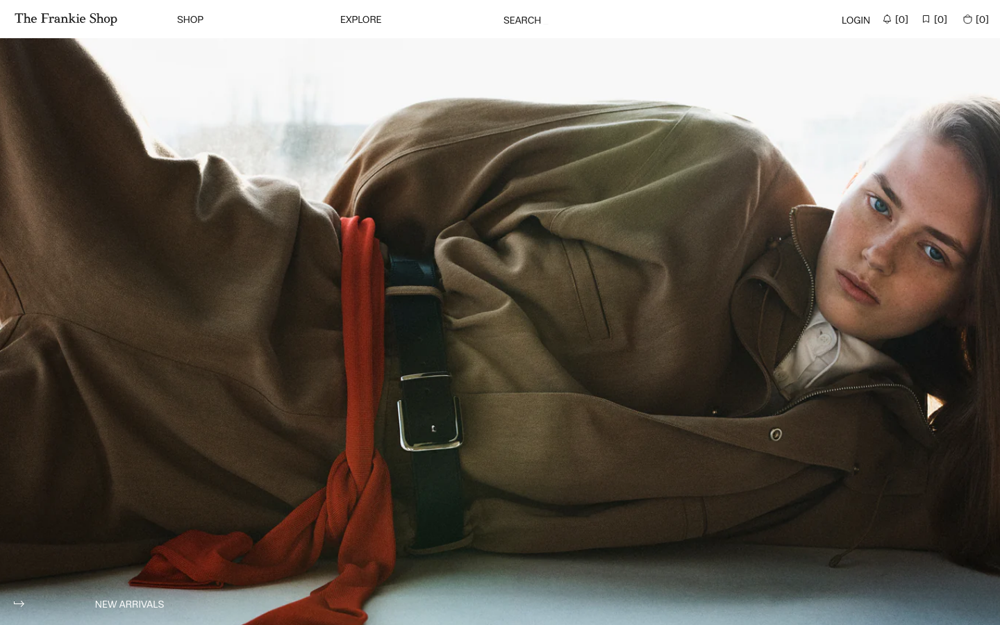
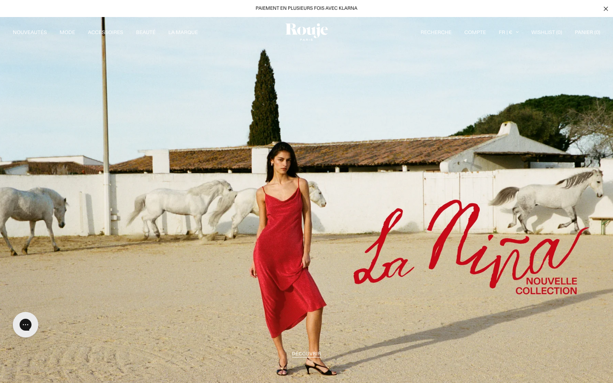
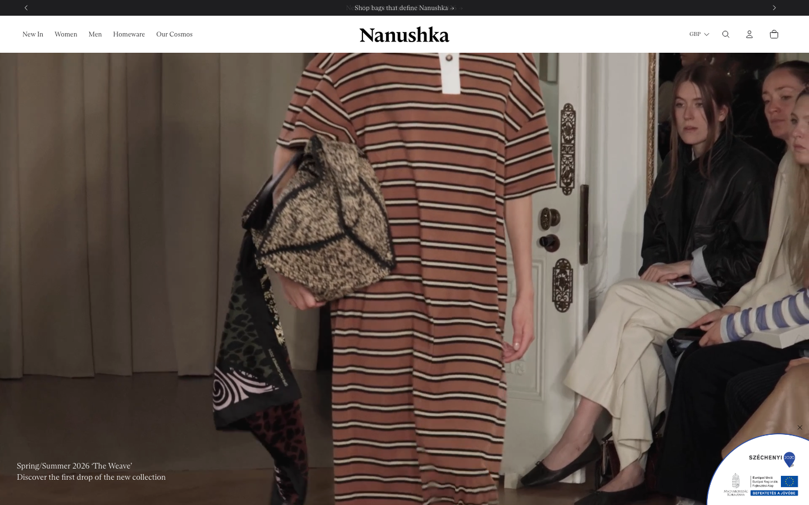
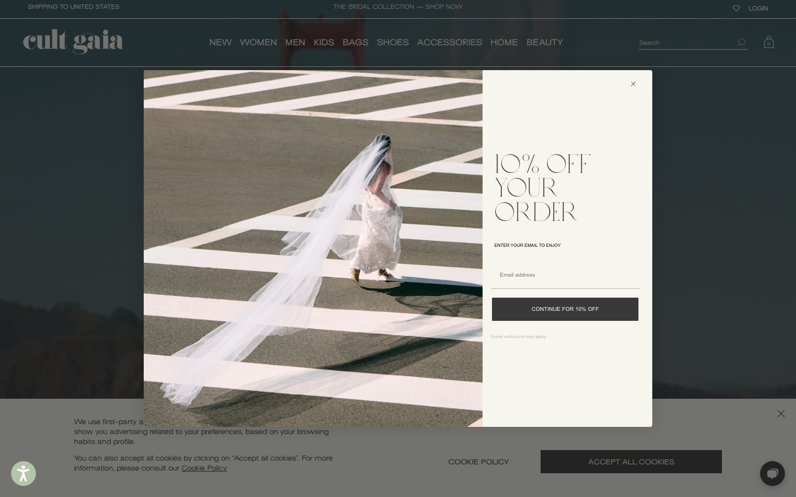

SHEVCHENKO
00. Executive Summary
Date: April 8, 2026 Site: https://shevchenko.fashion Platform: Shopify (Dawn 15.2.0) Brand: SHEVCHENKO — Ukrainian designer women's knitwear & fashion
Executive Summary
SHEVCHENKO has strong brand fundamentals — beautiful product photography, quality materials (lamb wool), handmade production, and a compelling founder story. However, the online store is significantly underbuilt for a brand at the ₴7,000-10,000+ price point.
The good news: the site runs on Shopify with the Dawn theme, which means every recommendation in this audit can be implemented without custom development. Most improvements require only app installations and theme editor configuration.
Key Findings
Critical Issues (Fix First)
| # | Issue | Impact | Section |
|---|---|---|---|
| 2 | Klaviyo Reviews installed — verify reviews are displayed prominently and being collected | Social proof must be visible above the fold | 05-product-pages |
| 3 | No collection filters (size, color, price) | Customers can't find products efficiently | 04-collection-pages |
| 4 | Empty H1 tag on homepage | SEO — Google can't identify the page topic | 01-technical-setup |
| 5 | Cyrillic URLs (encoded, unreadable) | Poor SEO, ugly social sharing, analytics issues | 02-seo-health |
| 6 | 86% of images missing alt text | SEO + accessibility violation | 01-technical-setup |
| 7 | Broken English hreflang (pointing to non-existent EN version) | Splitting Google ranking authority | 02-seo-health |
| 8 | No color swatches — products have 2-3 colors but no way to switch on product page | Customers can't find other colors, directly hurts add-to-cart rate | 05-product-pages |
High Priority (Big Impact)
| # | Issue | Impact | Section |
|---|---|---|---|
| 9 | Homepage has only hero + products (no trust badges, brand story, social proof) | Poor first impression, low engagement | 03-homepage |
| 11 | 109 JS files (2.6 MB) — caused partly by 3 redundant app pairs (2 size charts, 2 SEO, 2 translation) | Slow mobile, poor Core Web Vitals | 01-technical-setup |
| 12 | No Microsoft Clarity / session recordings | Can't see how users interact with the site | 11-analytics-tracking |
| 13 | No trust badges on product or cart pages | Purchase hesitation at decision point | 05-product-pages |
| 14 | Product descriptions lack depth (no model measurements, no styling tips) | Incomplete information for purchase decision | 05-product-pages |
| 15 | No cross-sell / "Complete the Look" sections | Missing AOV increase opportunity | 05-product-pages |
Medium Priority (Important but not urgent)
| # | Issue | Section |
|---|---|---|
| 16 | Default Dawn typography (not premium enough) | 08-design-ux |
| 17 | No mega menu (flat category dropdown) | 07-navigation-search |
| 18 | Footer incomplete (no email, no contact info, no payment icons) | 07-navigation-search |
| 19 | No blog content strategy (only 1 post exists) | 02-seo-health |
| 20 | Announcement bar disabled — just enable it | 03-homepage |
| 21 | English version not ready (internationalization) | 10-internationalization |
| 22 | Organization schema has 8 empty sameAs fields | 01-technical-setup |
Implementation Roadmap
Week 1-2: Quick Wins (No code required)
Week 3-4: Core Improvements
Month 2: Enhancement
Month 3+: Growth
Current Store Performance (March 2026)
| Metric | Value | Benchmark | Gap |
|---|---|---|---|
| Monthly sessions | 26,861 | — | Decent, growing +1.7% |
| Conversion rate | 0.34% | 2-5% (UA fashion) | 6-15x below benchmark |
| Average order value | ₴10,158 | — | Excellent (sets selling well) |
| Monthly orders | 97 | — | Growing +29% |
| Net sales | ₴985,302/mo | — | Growing +39% |
| Returning customer rate | 21.73% | 40-60% | Needs improvement |
| Returns | ₴0 | — | Zero returns — excellent |
Conversion Funnel Analysis
Sessions: 26,861 (100%)
↓ ──── 98.3% DROP OFF ← Product pages not converting
Added to cart: 448 (1.66%)
↓ ──── 39.5% drop off ← Cart friction
Reached checkout: 271 (1.01%)
↓ ──── 65.7% DROP OFF ← Checkout abandonment
Purchased: 93 (0.34%)
The two biggest revenue opportunities:
- Product page → Add to cart (1.66% → 5%): Fixing size guide visibility, adding trust badges, reviews, better descriptions, and "Complete the Look" could 3x the add-to-cart rate.
- Checkout → Purchase (34.3% → 55%): Adding trust signals in cart, clear shipping info, and abandoned checkout emails could recover 50+ additional orders per month = ₴500K+ additional revenue.
Top Products (validates "Complete the Look" strategy)
| Product | Sales | Growth |
|---|---|---|
| Cotton cardigan + pants set (graphite) | ₴109.2K | +995% |
| Wool cardigan + midi skirt set (blue) | ₴95.2K | +14% |
| Cotton cardigan + pants set (mocha) | ₴59.3K | +526% |
Key insight: Sets/bundles are the top sellers with explosive growth. This strongly validates the "Complete the Look" cross-sell recommendation — customers already want to buy outfits, not individual pieces.
Expected Results
Based on industry benchmarks, the competitor gap analysis, and actual store data:
| Metric | Current | Target | Revenue Impact |
|---|---|---|---|
| Conversion rate | 0.34% | 1-2% | 3-6x more orders = ₴2-5M+ additional/mo |
| Add-to-cart rate | 1.66% | 5%+ | 3x more carts |
| Checkout completion | 34.3% | 55%+ | +50 orders/month = ₴500K+/mo |
| AOV | ₴10,158 | ₴11,000+ | +10% with cross-sells |
| Organic search traffic | — | +30-50% | 3-6 months after SEO fixes |
Technical Overview
| Metric | Current | Target |
|---|---|---|
| Theme | Dawn 15.2.0 (free) | Dawn customized / Premium theme |
| Page weight | 2.6 MB | <1.5 MB |
| JS files | 109 | <40 |
| Image alt coverage | 14% | 100% |
| URL language | Mixed Cyrillic/Latin | 100% Latin |
| Email subscribers | Klaviyo active | Growing list, optimize flows |
| Product reviews | Klaviyo Reviews installed | 5+ per product, displayed prominently |
| Collection filters | None | Size, color, price |
| Homepage sections | 2 (hero + products) | 6-8 sections |
Audit Sections
- Technical Setup — Theme, speed, images, analytics, headings, schema
- SEO Health — URLs, hreflang, meta tags, canonicals, internal linking
- Homepage — Hero, trust badges, collections, brand story, social proof, newsletter
- Collection Pages — Filters, sorting, cards, banners, mobile
- Product Pages — Size guide, reviews, descriptions, trust, cross-sells, photos
- Cart & Checkout — Free shipping bar, upsells, trust, abandonment
- Navigation & Search — Mega menu, predictive search, footer, mobile nav
- Design & UX — Typography, mobile, layout, imagery, contact page
- Analytics & Tracking — GA4, Clarity, GSC, Facebook Pixel, KPI dashboard
- Competitor Analysis — Sleeper, Frankie Shop, Rouje, Nanushka, Cult Gaia benchmarks
- Competitor References — Live URLs for every design recommendation
01. Technical Setup
Overview
| Metric | Status |
|---|---|
| Platform | Shopify (Dawn 15.2.0 — free theme) |
| Domain | shevchenko.fashion |
| Shopify Store | 3ghi0h-pn.myshopify.com |
| Currency | UAH |
| Country | Ukraine |
| Locale | Ukrainian (uk) |
| GA4 | Installed |
| Facebook Pixel | Installed |
| Clarity / Hotjar | Not installed |
| SSL | Active (HTTPS) |
| Favicon | Present |
1.1 Theme: Dawn 15.2.0
Current State
The site runs on Dawn, Shopify's default free theme (version 15.2.0). Dawn is lightweight and fast out of the box, but it's the most commonly used Shopify theme — meaning the store looks similar to thousands of other Shopify stores.
Recommendation
Stay on Dawn and customize with code. Dawn is a solid, fast foundation. Rather than paying $380 for a premium theme (and dealing with theme lock-in), invest in targeted code customizations that make Dawn feel premium and unique:
Action Steps
- Custom typography — add a serif font for headings (Cormorant Garamond, Playfair Display) via theme code
- Product page gallery upgrade — replace Dawn's default thumbnail grid with a modern gallery (see Product Pages section for details)
- Custom sections — add brand story, trust badges, and lookbook sections via Liquid code
- Mega menu — add visual category navigation with images
- Micro-interactions — subtle animations on hover, fade-in on scroll
- Nanushka — elegant serif headings: nanushka.com
- Rouje — script font for campaigns: rouje.com/en
- Cult Gaia — distinctive script logo: cultgaia.com
All of these can be achieved by a developer editing Dawn's Liquid/CSS code directly, without changing themes. This approach is more flexible, avoids vendor lock-in, and lets you control exactly what changes.
Expected Impact
Targeted code customizations on Dawn achieve the same visual result as a premium theme, with better performance and lower cost.
Medium Impact Area: UX / Trust / Conversion
1.2 App Redundancy — Critical Performance Issue
Current State
14 apps are installed. Several are duplicates serving the same function:
| Function | App 1 | App 2 | Recommendation |
|---|---|---|---|
| Size Charts | BF Size Charts | MP Size Chart & Size Guide | Remove one |
| SEO & Speed | SearchPie SEO & Speed | Tapita SEO & Speed | Remove one |
| Translation | Translate & Adapt (Shopify) | Transtore | Remove one |
Each unnecessary app adds 2-5 JavaScript files and 1-3 CSS files to every page load. Removing 3 redundant apps could eliminate 10-15 JavaScript files and measurably improve page speed.
Full App Inventory
| App | Purpose | Status |
|---|---|---|
| Klaviyo Reviews | Product reviews | Keep |
| BF Size Charts | Size chart display | Pick one |
| MP Size Chart & Size Guide | Size chart display | Pick one |
| SearchPie SEO & Speed | SEO optimization | Pick one |
| Tapita SEO & Speed | SEO optimization | Pick one |
| Translate & Adapt | Translation (Shopify native) | Pick one (recommend keeping this one — it's Shopify's native tool) |
| Transtore | Translation | Pick one |
| Flow | Shopify automation | Keep |
| Search & Discovery | Product search & recommendations | Keep |
| Releasit COD Form | Cash on delivery | Keep (important for UA market) |
| MonoPay Shevchenko | Monobank payments | Keep |
| Messaging | Chat/messaging | Keep |
Action Steps
- Size charts: Compare BF Size Charts and MP Size Chart. Keep whichever is actively displayed on product pages. Uninstall the other.
- SEO apps: Compare SearchPie and Tapita. Keep whichever provides the most value (check which features you actually use). Uninstall the other. Note: Dawn + Shopify's built-in SEO handles most basics without any app.
- Translation: Keep Shopify's native "Translate & Adapt" (free, best Shopify integration). Evaluate if Transtore provides additional value — if not, remove it.
- After uninstalling, check theme code for leftover app snippets. Some apps leave residual code after uninstall.
Expected Impact
Removing 3 redundant apps can reduce JavaScript files by 10-15 and page weight by 100-200 KB. This directly improves load time, especially on mobile.
Critical Impact Area: Performance / SEO
1.3 Page Speed & Resource Load
Current State
| Metric | Value | Rating |
|---|---|---|
| Total Resources | 196 | Poor |
| Total Transfer Size | 2,624 KB (2.6 MB) | Needs Improvement |
| JavaScript Files | 109 | Poor |
| CSS Files | 44 | Poor |
| Image Transfer | 1,308 KB | Needs Improvement |
| Font Files | 2 (36 KB) | Good |
| First Contentful Paint | ~768ms* | Good |
| DOM Complete | ~1,321ms* | Good |
*Measured in headless browser without network throttling. Real mobile users on 4G will experience 2-4x longer load times.
Resource Breakdown
| Type | Files | Size |
|---|---|---|
| JavaScript | 109 | 1,127 KB |
| Images | 17 | 1,308 KB |
| CSS | 44 | 80 KB |
| Fonts | 2 | 36 KB |
| Other | 24 | 73 KB |
Top Heaviest Resources
| Size | Type | File |
|---|---|---|
| 345 KB | JS | Shopify Web Pixel hooks |
| 198 KB | Image | photo_2025-06-23_15.39.31.jpg |
| 173 KB | Image | photo_2025-06-23_15.13.41_1.jpg |
| 124 KB | Image | photo_2025-06-2315.13.35.jpg |
| 121 KB | Image | IMG_5502_1.heic |
| 115 KB | Image | photo_2025-06-23_15.13.38_1.jpg |
| 108 KB | JS | approval-scopes-FullScreenBackground.js |
| 101 KB | Image | photo_2025-06-23_15.13.39_1.jpg |
| 95 KB | JS | Facebook Events (fbevents.js) |
| 74 KB | Image | IMG_9406.jpg |
Best Practice (2026)
- Total page weight should be under 1.5 MB for mobile (currently 2.6 MB)
- JavaScript files should be under 30 (currently 109)
- All images should use WebP or AVIF format (currently using JPG and HEIC)
- First Contentful Paint under 1.8s on real 4G connection
Action Steps
Images (highest impact):
- Convert all images to WebP format — Shopify CDN does this automatically if you use the
| image_urlfilter in Liquid. Check that all theme image tags use this filter. - Remove HEIC images — HEIC is not supported by most browsers. Re-upload those product images as JPG or PNG (Shopify will auto-convert to WebP for delivery).
- Set explicit image dimensions — add
widthandheightattributes to all<img>tags to prevent Cumulative Layout Shift. - Lazy load below-the-fold images — Dawn should handle this by default, but verify all product grid images use
loading="lazy".
JavaScript (medium impact):
- Audit installed Shopify apps — 109 JS files suggests multiple apps are loading scripts. In Shopify Admin → Settings → Apps, review each installed app. Remove any unused apps, as they often leave residual scripts.
- Defer non-critical scripts — Facebook Pixel (95 KB) and Shopify Web Pixel (345 KB) can be deferred. In theme code, add
deferattribute to non-critical script tags.
CSS:
- 44 CSS files is high for Dawn. Check if apps are injecting unnecessary stylesheets. Each removed app can eliminate 2-5 CSS files.
Expected Impact
Reducing page weight from 2.6 MB to under 1.5 MB and cutting JS files from 109 to under 40 can improve mobile load time by 40-60%. This directly impacts:
- Google search rankings (Core Web Vitals are a ranking factor)
- Bounce rate (53% of mobile users leave if page takes >3 seconds)
- Conversion rate (every 100ms improvement = ~1% conversion increase)
High Impact Area: SEO / Conversion / UX
1.4 Image Optimization & Alt Text
Current State
Homepage image audit revealed critical alt text issues:
| Status | Count |
|---|---|
| Images with alt text | 3 |
| Images missing alt text | 18 |
| Alt text coverage | 14% |
Most product images, hero images, and lifestyle photos have no alt text at all.
Additionally:
- Image file names are auto-generated timestamps (e.g.,
photo_2025-06-23_15.39.31.jpg) — not descriptive - HEIC format files present (browser compatibility issue)
- Hero image is loaded as
eagerbut product images correctly uselazy
Best Practice (2026)
- 100% of images must have descriptive alt text (SEO + accessibility requirement)
- Alt text should describe the product: "Beige viscose blouse with bow detail — SHEVCHENKO"
- File names should be descriptive:
shevchenko-beige-viscose-blouse-front.webp
Action Steps
- In Shopify Admin → Products, edit each product and add alt text to every image. Use format:
[Product Name] - [View/Detail] — SHEVCHENKO - In Shopify Admin → Content → Files, rename uploaded files with descriptive names before uploading
- For the hero image and lifestyle images, add alt text via the theme editor (Customize → select image → add alt text)
- Re-upload any HEIC files as JPG or PNG format
Expected Impact
- Better Google Image Search rankings (images can drive 20-30% of fashion site traffic)
- Improved accessibility score
- Better social sharing previews
Critical Impact Area: SEO / Accessibility
1.5 Analytics & Tracking Setup
Current State
| Tool | Status |
|---|---|
| Google Analytics 4 (GA4) | Installed |
| Facebook Pixel | Installed |
| Microsoft Clarity | Not installed |
| Hotjar | Not installed |
| Google Search Console | Unknown |
| Google Tag Manager | Not detected |
Best Practice (2026)
A complete analytics stack for a fashion e-commerce brand should include:
- GA4 — traffic, conversions, user journeys ✓
- Facebook Pixel — ad tracking, retargeting ✓
- Session recordings — see exactly how users interact with your site ✗
- Heatmaps — understand where users click and scroll ✗
- Google Search Console — monitor search performance, indexing issues ✗ (unconfirmed)
- Google Tag Manager — centralize all tracking scripts ✗
Action Steps
- Install Microsoft Clarity (free) — Shopify App Store → search "Microsoft Clarity" → install. This gives you session recordings + heatmaps at no cost. No code changes needed.
- Verify Google Search Console — go to search.google.com/search-console → add property → verify via DNS or HTML tag. Submit sitemap.xml.
- Set up GA4 enhanced ecommerce — in Shopify Admin → Settings → Customer events, verify GA4 is tracking: view_item, add_to_cart, begin_checkout, purchase events.
- Consider Hotjar (paid) as a more advanced alternative to Clarity for session recordings with user feedback features.
Expected Impact
Session recordings will reveal specific UX friction points that are impossible to detect from analytics data alone. Clarity is free and typically reveals 3-5 quick-win improvements within the first week of use.
High Impact Area: Conversion (enables data-driven optimization)
1.6 Heading Structure
Current State
The homepage heading hierarchy is broken:
H2: Ваш кошик порожній (Your cart is empty — cart drawer)
H2: Ваш кошик (Your cart — cart drawer)
H2: Розрахункова сума (Estimated total — cart drawer)
H2: Країна/регіон (Country/region — cart drawer)
H2: Мова (Language — cart drawer)
H1: (EMPTY)
H3: Блуза з віскози, бежевий (product card)
H3: Спідниця з віскози, бежевий (product card)
H2: Країна/регіон (footer)
H2: Мова (footer)
Problems:
- The H1 tag is empty — this is the most important heading for SEO
- Cart drawer elements are using H2 tags (should be hidden from page heading hierarchy)
- No clear heading hierarchy (H1 → H2 → H3)
- Product names jump from H1 to H3 (skipping H2)
Best Practice (2026)
- Every page must have exactly one H1 containing the primary keyword
- Homepage H1 should be: "SHEVCHENKO — Авторський жіночий одяг" or similar
- Heading hierarchy should be sequential: H1 → H2 → H3
- Cart drawer/modal elements should use
aria-labelinstead of heading tags
Action Steps
- In Shopify Theme Editor → Home page → find the hero/banner section → set the heading to H1 and add text like "Авторський жіночий трикотаж з вовни ягня"
- In Dawn theme code (sections/cart-drawer.liquid), change
<h2>tags in the cart drawer to<p>or<span>with appropriate aria labels - Ensure each page has a unique, keyword-rich H1
Expected Impact
Fixing the empty H1 alone can improve search rankings for brand + category keywords. Google uses H1 as a strong signal for page topic relevance.
Critical Impact Area: SEO
1.7 Structured Data (Schema Markup)
Current State
Homepage schemas:
- ✓ Organization schema (name, logo, URL, Instagram link)
- ✓ WebSite schema with SearchAction
- ✗ No LocalBusiness schema
- ✗ Organization
sameAshas 8 empty strings (only Instagram is filled)
Product page schemas:
- ✓ ProductGroup schema (brand, category, description, variants)
- ✓ Organization schema
- ✗ No Review/Rating schema (no reviews exist)
- ✗ No BreadcrumbList schema
- ✗ No FAQ schema
Best Practice (2026)
Fashion e-commerce should have:
- Product schema with price, availability, images, reviews → enables rich snippets in Google
- BreadcrumbList schema → shows navigation path in search results
- Organization schema with all social links filled → knowledge panel
- FAQ schema on product pages → extra search result real estate
- Review/AggregateRating schema → star ratings in search results
Action Steps
- Fix Organization sameAs — in theme code (snippets/structured-data.liquid or similar), fill in all social media URLs or remove empty strings
- Add BreadcrumbList schema — Dawn supports this; enable in theme settings or add via Liquid snippet
- Add review system (see Product Page section) — this automatically generates Review schema
- Add FAQ schema to product pages for common questions (sizing, care, shipping)
Expected Impact
Rich snippets (star ratings, price, availability in Google results) can increase click-through rate by 20-35%. BreadcrumbList improves site structure signals for Google.
High Impact Area: SEO
1.8 Robots.txt & Sitemap
Current State
- robots.txt: Standard Shopify-generated file. Properly blocks /admin, /cart, /checkout. No custom rules needed.
- sitemap.xml: Auto-generated by Shopify. Contains product, collection, and page sitemaps. Working correctly.
Action Steps
- Submit sitemap to Google Search Console (if not already done): Go to GSC → Sitemaps → add
https://shevchenko.fashion/sitemap.xml - No changes needed to robots.txt
Low (already correct) Impact Area: SEO
02. SEO Health
Overview
| Check | Status | Notes |
|---|---|---|
| Canonical tags | Present | Correct on homepage |
| Hreflang tags | Present | uk, en, x-default configured |
| Meta title | Present | Good keyword usage |
| Meta description | Present | Good, brand-focused |
| Open Graph tags | Present | Complete set |
| Twitter card | Present | summary_large_image |
| URL structure | Issues | Cyrillic URLs, inconsistent language |
| Sitemap | Present | Auto-generated by Shopify |
| Robots.txt | Present | Standard Shopify |
2.1 URL Structure — Critical Issues
Current State
The site has a major URL consistency problem. Product and collection URLs mix Cyrillic and Latin characters without a clear pattern:
English URLs (correct):
/products/blouse-viscose-beige/products/chocolate-lamb-wool-cape/products/velvet-overalls-beige-caramel/collections/new/collections/spring-summer-2026
Cyrillic URLs (problematic):
/collections/сукні(dresses)/collections/низи(bottoms)/collections/верхи(tops)/collections/взуття(shoes)/collections/верхній-одяг(outerwear)/collections/аксессуари(accessories)/collections/знижки(sale)/pages/комплекти(sets)/pages/доставка(delivery)/pages/обміни-та-повернення(returns)/pages/розмірна-сітка(size chart)/pages/про-нас(about)
What this looks like in browser/sharing:
The Cyrillic URLs get encoded to long, unreadable strings:
https://shevchenko.fashion/collections/%D1%81%D1%83%D0%BA%D0%BD%D1%96
This is terrible for:
- SEO — Google prefers clean, readable URLs with relevant keywords
- CTR — Users are less likely to click on encoded URLs in search results
- Sharing — When shared on social media or messengers, encoded URLs look spammy
- Analytics — Harder to read in GA4 reports
Best Practice (2026)
All URLs should be in Latin characters (English), lowercase, hyphen-separated:
/collections/dresses(not/collections/сукні)/collections/tops(not/collections/верхи)/pages/about-us(not/pages/про-нас)/pages/delivery(not/pages/доставка)
Action Steps
- In Shopify Admin → Products → Collections, edit each collection with a Cyrillic URL handle:
- "Сукні" → URL handle:
dresses - "Низи" → URL handle:
bottoms - "Верхи" → URL handle:
tops - "Взуття" → URL handle:
shoes - "Верхній одяг" → URL handle:
outerwear - "Аксессуари" → URL handle:
accessories - "Знижки" → URL handle:
sale -
"Подарункові сертифікати" → URL handle:
gift-certificates -
In Shopify Admin → Pages, edit each page URL handle:
- "Комплекти" →
sets - "Доставка" →
delivery - "Обміни та повернення" →
returns-exchanges - "Розмірна сітка" →
size-chart - "Про нас" →
about - "Міссія та цінності" →
mission-values -
"Політика конфіденційності" →
privacy-policy -
Set up 301 redirects — In Shopify Admin → Settings → Navigation → URL Redirects, add redirects from old Cyrillic URLs to new Latin URLs. This preserves any existing SEO value.
-
For Cyrillic product URLs, update the handle in Shopify Admin → Products → [Product] → SEO → URL handle
Expected Impact
Clean URLs improve:
- Search result click-through rate by 10-25%
- Social sharing appearance
- Analytics readability
- Overall SEO authority
Critical Impact Area: SEO / UX
2.2 Hreflang & Language Configuration
Current State
Hreflang tags are present on the homepage:
<link rel="alternate" hreflang="x-default" href="https://shevchenko.fashion/" />
<link rel="alternate" hreflang="uk" href="https://shevchenko.fashion/" />
<link rel="alternate" hreflang="en" href="https://shevchenko.fashion/en" />
Issues found:
- The
/enversion is referenced in hreflang but the user confirmed there is currently no English version live. This means Google is indexing a broken/incomplete English version. - The existing audit (2026-04-07) mentioned missing hreflang — but they are actually present. The issue is that they point to a non-existent or incomplete page.
Best Practice (2026)
- Hreflang tags should only reference fully translated, live pages
- Each language version must be fully translated (navigation, product descriptions, policies)
- Use Shopify Markets for proper multi-language setup
Action Steps
Immediate (before EN version is ready):
- Remove or disable the English market in Shopify Admin → Settings → Markets until the English version is fully ready. This prevents Google from indexing incomplete English pages.
- Alternatively, set the English market to "inactive" status.
Expected Impact
Removing broken English hreflang prevents Google from splitting your ranking authority between a working Ukrainian page and a broken English page. This can recover lost organic traffic within 2-4 weeks.
Critical Impact Area: SEO
2.3 Meta Tags & Open Graph
Current State
Homepage: | Tag | Content | Quality | |-----|---------|---------| | Title | SHEVCHENKO – Авторський жіночий трикотаж з вовни ягня | Офіційний сайт | Good | | Description | SHEVCHENKO — бренд жіночого одягу. Авторський трикотаж, преміальні матеріали, ручна робота. Лімітовані колекції для тих, хто цінує тепло, стиль і унікальність. | Good | | og:title | Same as title | Good | | og:description | Same as description | Good | | og:image | Logo PNG (not a lifestyle/product photo) | Needs Improvement | | og:type | website | Correct | | twitter:card | summary_large_image | Good |
Issues
- og:image uses the logo instead of a lifestyle/product photo. When the homepage is shared on social media, it shows the brand logo rather than an attractive product shot.
- Title could be more concise — at 73 characters it's slightly long. Google typically displays 50-60 characters.
- Facebook domain verification is set (
abbplq43of54y1qmve8iyvwz2olxht) — good.
Action Steps
- Change og:image to a high-quality lifestyle photo (model wearing Shevchenko clothing). Upload a 1200x628px image in Shopify → Theme → Social sharing image.
- Optimize title length — consider: "SHEVCHENKO — Авторський жіночий трикотаж | Офіційний сайт" (56 chars)
- Add unique meta descriptions for every collection and product page — check in Shopify Admin → Products/Collections → SEO settings
Expected Impact
A compelling og:image increases social sharing click-through by 2-3x. Optimized title length ensures full display in Google search results.
Medium Impact Area: SEO / Social traffic
2.4 Canonical Tags
Current State
Canonical tags are correctly implemented on the homepage:
<link rel="canonical" href="https://shevchenko.fashion/" />
Shopify handles canonical tags automatically for product pages with variants, collection pagination, and filtered views.
Action Steps
No immediate action needed. Shopify handles this correctly by default.
Low (already correct) Impact Area: SEO
2.5 Internal Linking Structure
Current State
The site has 44 internal links on the homepage, distributed across:
- Main navigation (13 links: Home, New, SS 2026, collab, categories)
- Product cards in featured sections (12+ product links)
- Footer links (Delivery, Returns, Size Chart, Search, Blog, About, Contact, Privacy, Mission)
- Policy links (Privacy, Contact info, Refund policy)
Issues
- Duplicate footer policy links — both Ukrainian versions (Обміни та повернення) and English Shopify defaults (Privacy policy, Refund policy, Contact information) exist in the footer. This creates confusion.
- Blog link says "Blog" in English while the rest of the footer is in Ukrainian
- No breadcrumbs on any page — missed internal linking opportunity
- No "recently viewed" or "related products" sections linking between products
Action Steps
- Remove duplicate English policy links from footer — keep only the Ukrainian versions
- Rename "Blog" to "Блог" in footer navigation
- Enable breadcrumbs — in Dawn theme, breadcrumbs can be enabled via theme settings or by editing the header section
- Add cross-linking sections (covered in Product Page section)
Expected Impact
Better internal linking distributes SEO authority across pages and helps Google understand site hierarchy. Breadcrumbs also appear in search results.
Medium Impact Area: SEO / UX
03. Homepage
Overview
The homepage is the brand's first impression. Currently, it is minimal to the point of being underbuilt — it relies almost entirely on a single hero image and a product grid, missing critical trust-building and conversion-driving sections.
Current Homepage Structure
Theme editor sections:
- Announcement bar (disabled)
- Header
- Image banner (hero)
- Featured collection
- Slideshow
- Slideshow
- Slideshow (disabled)
- Video (disabled)
- Footer (Apps, Section, Footer)
| Section | Present? | Notes |
|---|---|---|
| Announcement bar | Disabled | Exists in theme but turned off — enable it |
| Navigation bar | Yes | Home, New, Catalog dropdown, Country selector, Search, Cart |
| Hero banner with CTA | Yes | Full-width image, "Переглянути новинки" button |
| Featured collection | Yes | Product grid |
| Slideshow sections | Yes (x2 active) | Content slideshows |
| Video | Disabled | Exists but turned off |
| Trust badges | No | No handmade, quality, shipping badges |
| Brand story section | No | About page exists but not featured on home |
| Social proof / Reviews | No | No testimonials or review snippets on homepage |
| Instagram feed | No | Only Instagram icon in footer |
| Value proposition | No | No "Why SHEVCHENKO" section |
Key observation: The homepage has more sections than the headless crawl showed (slideshows, disabled video). But it still lacks trust-building and conversion-driving content sections.
3.1 Hero Banner & Call-to-Action
Current State
- Full-width lifestyle photo of model (good visual quality)
- CTA button "Перейти до колекції" (Go to collection) — visible on mobile
- On desktop, the hero text/CTA appears to be overlaid on the image but may be difficult to read depending on scroll position
- No headline text on the hero (just the image + button)
Best Practice (2026)
A fashion brand hero should communicate 3 things in under 3 seconds:
- What — what you sell (designer knitwear)
- Why — what makes you different (handmade, lamb wool, limited editions)
- Action — what to do next (shop the collection)
Action Steps
- Add a headline to the hero section: e.g., "Авторський трикотаж з вовни ягня" or "Лімітовані колекції для тих, хто цінує унікальність"
- Add a subheading: "Ручна робота. Преміальні матеріали. Зроблено в Україні."
- Make the CTA more specific: Instead of "Перейти до колекції" → "Дивитись колекцію SS 2026" or "Нова колекція" (creates specificity and urgency)
- Ensure text contrast — white text on a light image is hard to read. Add a dark overlay gradient (50-70% opacity) behind text.
- Rouje — campaign hero with headline + CTA: rouje.com/en
- Gymshark — full-screen video hero: gymshark.com
- The Frankie Shop — editorial hero: thefrankieshop.com
Expected Impact
A clear hero with headline + USP + specific CTA typically increases click-through to collection pages by 25-40%.
High Impact Area: Conversion / UX
3.2 Trust Badges & Value Proposition
Current State
There are zero trust signals on the homepage. No mention of:
- Handmade production
- Premium materials
- Free shipping / delivery terms
- Return policy
- Secure payments
- "Made in Ukraine"
Best Practice (2026)
A horizontal row of 3-5 trust badges (with icons) should appear above the fold or directly below the hero. Fashion brands at this price point need to justify the premium.
Action Steps
- Add a "trust bar" section below the hero. In Dawn theme editor:
- Add a "Multicolumn" section
-
Add 4 columns with icons:
- Ручна робота (Handmade) — with a craft/hand icon
- Вовна ягня преміум якості (Premium lamb wool) — with a material icon
- Безкоштовна доставка від ₴X (Free shipping from ₴X) — with a delivery icon
- Легке повернення 14 днів (Easy returns 14 days) — with a return icon
-
Alternative: Use Dawn's "Icon with text" section which is specifically designed for this purpose.
Expected Impact
Trust badges below the hero have been shown to increase add-to-cart rate by 10-15% in fashion e-commerce. They answer the customer's immediate questions about quality and risk.
Critical Impact Area: Conversion / Trust
3.3 Collection Highlights
Current State
The homepage shows a flat grid of featured products with no categorization or curation. There are no highlighted collections (e.g., "New Arrivals", "SS 2026", "Bestsellers").
Best Practice (2026)
Homepage should feature 2-3 curated collection sections with lifestyle imagery:
- New Arrivals — the latest collection
- Seasonal Collection — SS 2026 feature
- Bestsellers or Editor's Picks — social proof through popularity
Each section should have: collection image, title, brief description, and "Shop Now" CTA.
Action Steps
- In Dawn theme editor, add "Collection list" or "Featured collection" sections:
- Section 1: "Нова колекція SS 2026" with banner image + "Дивитись" button → links to /collections/spring-summer-2026
- Section 2: "SHEVCHENKO x NEHA" collab highlight → links to /collections/shevchenko-x-neha
-
Section 3: "Трикотаж з вовни ягня" (Knitwear) → links to a knitwear collection
-
Use full-width lifestyle images for these sections, not product grid images.
Expected Impact
Collection sections create visual hierarchy and guide users toward specific categories, reducing decision paralysis. This typically increases pages per session by 20-30%.
High Impact Area: Conversion / UX
3.4 Brand Story Section
Current State
The About page exists (/pages/про-нас) with brand story content — founded by sisters Olena and Svitlana Shevchenko in 2013, brand launched in 2016. But none of this appears on the homepage.
Best Practice (2026)
Premium fashion brands benefit hugely from homepage brand storytelling. A short "Our Story" section with:
- Founder photo or brand story image
- 2-3 sentence brand narrative
- Link to full story
This builds emotional connection and justifies the premium price point.
Action Steps
- In Dawn theme editor, add a "Rich text" or "Image with text" section:
- Image: Founders or atelier photo
- Heading: "Наша історія" (Our Story)
- Text: "Бренд SHEVCHENKO народився на дитячому просторі двох сестер — Олени та Світлани Шевченко. З 2016 року ми створюємо авторський жіночий одяг з преміальних матеріалів, де кожна річ — це поєднання комфорту та елегантності."
- Button: "Дізнатися більше" → /pages/про-нас
Expected Impact
Brand storytelling increases time on site and emotional connection. For artisanal/handmade brands, this is often the #1 factor in converting first-time visitors.
High Impact Area: Conversion / Trust
3.5 Social Proof Section
Current State
No customer reviews, testimonials, press mentions, or user-generated content appears anywhere on the homepage.
Best Practice (2026)
Fashion brands should showcase at minimum:
- Customer reviews/testimonials — quotes with photos
- Press mentions — "As seen in..." logos
- Instagram feed — real customer photos wearing the brand
- Numbers — "1000+ задоволених клієнтів" if applicable
Action Steps
- Add a testimonials section — In Dawn, use "Rich text" or install a testimonial section. Even 3-4 hand-picked customer quotes with first names work.
- Add Instagram feed — Install the free Shopify app "Instafeed" to display your Instagram grid on the homepage. This provides social proof + fresh content automatically.
- Add a "press" or "as seen in" bar if you have any press coverage or media mentions.
Expected Impact
Social proof on homepage can increase conversion by 15-20%. Instagram feeds specifically keep content fresh and show real-world product usage.
High Impact Area: Conversion / Trust
3.6 Enable Disabled Sections
Current State
Two homepage sections are built but disabled:
- Announcement bar — ready to use, just needs to be turned on
- Video section — exists but turned off
- Third Slideshow — disabled
Action Steps
- Enable the Announcement bar immediately — this is free real estate for:
- Free shipping threshold: "Безкоштовна доставка від ₴X"
- New collection promo: "Нова колекція SS 2026 вже доступна"
-
Rotate messages if Dawn supports it
-
Enable the Video section — if you have brand/product video content, this is a strong engagement driver. Consider adding a short brand story video or collection preview.
-
Review the disabled Slideshow — is it disabled because it's outdated? Update the content and re-enable, or remove if redundant.
- Rouje — "Free delivery from €99": rouje.com/en
- Nanushka — editorial announcement: nanushka.com
Critical (announcement bar), Medium (video, slideshow) Impact Area: Conversion / UX
3.7 Homepage Content Strategy
Current State
The homepage has: hero banner → featured collection → 2 slideshows → footer. This is more content than initially detected, but still missing key trust-building sections.
Best Practice (2026)
Homepage should have 6-8 distinct sections that tell a story from top to bottom.
Recommended Homepage Order
- Announcement bar (enable existing)
- Hero banner (existing — improve CTA text)
- Trust badges (new — add "Icon with text" section)
- Featured collection (existing)
- Slideshow (existing)
- Brand story (new — "Image with text" section)
- Slideshow (existing)
- Social proof / Reviews (new — testimonials or Instagram feed)
- Video (enable existing)
- Footer (improve)
Expected Impact
Adding trust badges, brand story, and enabling the announcement bar can increase homepage engagement by 25-40%.
High Impact Area: Conversion / UX / Trust
04. Collection Pages
Overview
Collection pages are where browsing happens. The current collection pages are basic Dawn defaults — a product grid with minimal navigation aids.
Current Collection Page Structure
| Element | Present? | Notes |
|---|---|---|
| Collection title | Yes | "Новинки" with breadcrumb "Головна" |
| Product grid | Yes | 4 columns desktop, 2 columns mobile |
| Product cards with image | Yes | Good quality lifestyle photos |
| Product name | Yes | Ukrainian |
| Price on card | Yes | UAH format |
| Filters | No | No filtering by size, color, price, material |
| Sorting | No | No sort options visible |
| Collection description | No | No descriptive text |
| Collection banner/image | No | Just title + grid |
| Product count | No | Users don't know how many items exist |
| Quick add to cart | No | Must click through to product page |
4.1 Collection Filters
Current State
There are no filters on collection pages. Customers cannot filter by:
- Size (XS/S, M/L, etc.)
- Color
- Price range
- Material
- Product type
For a brand with multiple categories (dresses, tops, bottoms, outerwear, shoes, accessories), the absence of filters forces customers to scroll through everything manually.
Best Practice (2026)
Fashion collection pages should offer:
- Size filter — most important for fashion
- Color filter — with color swatches (visual, not text)
- Price filter — range slider or brackets
- Sort options — by price (low/high), newest, bestselling
Action Steps
- Enable Dawn's built-in filtering — Dawn 15.2.0 supports Shopify's native "Storefront Filtering":
- Go to Shopify Admin → Online Store → Navigation → Collection and search filters
- Enable filters for: Size, Color, Price, Product type
-
Dawn will automatically display these as sidebar or dropdown filters
-
Configure product tags/options consistently across all products:
- Every product must have "Size" option (XS, S, M, L, XL, XXL)
- Every product must have "Color" option
-
Tags should include material type
-
Enable sorting — in Dawn theme editor, the collection template should have a "Sort by" option. Enable it.
- SKIMS — filter sidebar: skims.com/collections/skims
- Nanushka — sidebar filters: nanushka.com/collections/women-dresses
Expected Impact
Filters reduce time-to-find-product by 60-70%. Sites with proper filtering see 20-30% higher conversion on collection pages. This is especially critical for mobile users (who scroll less).
Critical Impact Area: Conversion / UX
4.2 Collection Banner & Description
Current State
Collection pages show only the title and a product grid. No collection-specific imagery, description, or storytelling.
Best Practice (2026)
Each collection should have:
- Banner image — lifestyle photo representing the collection mood
- Description — 2-3 sentences describing the collection, materials, and inspiration (also valuable for SEO)
- Product count — "12 товарів" (12 products)
Action Steps
- In Shopify Admin → Products → Collections, add:
- Image for each collection (lifestyle photo, not a product photo)
-
Description with relevant keywords, e.g., for "Сукні": "Авторські сукні SHEVCHENKO з натуральних тканин — шифон, віскоза, вовна ягня. Кожна модель — унікальне поєднання елегантності та комфорту."
-
In Dawn theme editor, ensure the collection template displays the collection image as a banner above the product grid.
Expected Impact
Collection descriptions help Google understand and rank collection pages for category keywords. Banner images create stronger brand impression and keep users engaged.
Medium Impact Area: SEO / UX
4.3 Product Cards
Current State
Product cards show:
- ✓ Product image (lifestyle photo)
- ✓ Product name
- ✓ Price
- ✗ No color/size availability indicator
- ✗ No quick-add button
- ✗ No sale badge or "New" badge
- ✗ No review rating
Best Practice (2026)
Fashion product cards should include:
- Available colors — small color swatches below the image
- Quick Add to Cart — allows adding to cart without visiting the product page
- Badges — "Нове" (New), "Хіт продажів" (Bestseller), "-20%" (Sale)
- Star rating (once reviews are implemented)
- Alo Yoga — hover swap + swatches: aloyoga.com
- The Frankie Shop — hover effect: thefrankieshop.com
Action Steps
- ~~Enable secondary image on hover~~ — DONE Already enabled.
- Add color swatches to product cards — this requires a Shopify app or Dawn code customization. Apps: "Variant Image Swatch" or "CSA Color Swatch"
- Add product badges — use Shopify tags or metafields:
- Tag "new" → shows "Нове" badge
- Compare-at price → shows discount percentage
- Tag "bestseller" → shows "Хіт" badge
- Enable quick add — Dawn has a "Quick add button" option in collection settings
Expected Impact
Image hover reduces the need to click through to product pages (faster browsing). Quick add removes friction from the purchase path. Together, these typically increase add-to-cart rate by 15-25%.
High Impact Area: Conversion / UX
4.4 Collection Navigation & Categories
Current State
The site has these collections:
- Новинки (New arrivals)
- SS 2026
- SHEVCHENKO x NEHA (collaboration)
- Сукні (Dresses)
- Низи (Bottoms)
- Верхи (Tops)
- Взуття (Shoes)
- Верхній одяг (Outerwear)
- Аксессуари (Accessories)
- Подарункові сертифікати (Gift certificates)
- Знижки (Sale)
There is also a "Комплекти" (Sets) page — but it's under /pages/ not /collections/, which means it's a static page rather than a dynamic product collection.
Issues
- "Комплекти" should be a collection, not a page — so products are dynamically listed and filterable
- No "All Products" link visible in navigation (though /collections/all exists)
- No sub-categories within collections
Action Steps
- Convert "Комплекти" from a page to a collection in Shopify Admin
- Create a "Все товари" (All Products) link in the main navigation as a fallback for users who want to browse everything
- Consider sub-collections using tags: e.g., within "Сукні" → filter by "Повсякденні" (Everyday), "Святкові" (Formal)
Expected Impact
Proper collection structure improves both navigation UX and SEO (collection pages rank well for category keywords).
Medium Impact Area: SEO / UX
4.5 Mobile Collection Experience
Current State
On mobile, the collection shows a 2-column grid with product image, name, and price. There are no filters, no sorting, and no sticky filter bar.
- Gymshark — sticky add-to-cart on mobile: gymshark.com
- SKIMS — sticky buy bar: skims.com
Best Practice (2026)
Mobile collection pages should have:
- Sticky filter/sort bar at the top — always accessible while scrolling
- Filter drawer — opens from bottom of screen (standard mobile UX pattern)
- "Back to top" button — for long collection pages
- Infinite scroll or "Load more" button instead of pagination
Action Steps
- Once filters are enabled (4.1), verify they work well on mobile — Dawn's filter should automatically use a drawer/modal on mobile
- Add infinite scroll — Dawn supports "Load more" button by default. Verify this is enabled in theme settings.
- Ensure product cards are large enough — minimum 44px tap targets for all interactive elements
Expected Impact
Mobile users are ~84% of Shevchenko's traffic (based on similar Ukrainian brands). Optimizing the mobile collection experience has outsized impact on overall conversion.
High Impact Area: Conversion / UX
05. Product Pages
Overview
Product pages are where buying decisions happen. The current product page has a solid foundation (good photos, basic info) but is missing critical conversion elements.
Current Product Page Structure
Product analyzed: Блуза з віскози, бежевий (₴7,980.00 UAH)
| Element | Present? | Quality |
|---|---|---|
| Product images | Yes (8 photos) | Good quantity, lifestyle shots |
| Product title (H1) | Yes | Ukrainian, descriptive |
| Price | Yes | ₴7,980.00 UAH |
| Color swatches | No | Products exist in 2-3 colors but no swatch to switch between them |
| Size selector | Yes | XS/S, M/L options |
| Size guide link | Yes | Present on product page |
| Add to Cart button | Yes | "Додати в корзину" |
| Buy It Now button | Yes | Present |
| Product description | Yes | 363 characters |
| Material/care info | Partial | In accordions |
| Trust badges | No | None |
| Reviews/ratings | Yes | Klaviyo Reviews app installed |
| Breadcrumbs | No | Missing |
| Cross-sell / Related | Partial | 1 section detected |
| Share buttons | Yes | Present |
| Sticky Add-to-Cart | Detected | On scroll |
| "Made to order" notice | Yes | "Під замовлення" visible on mobile |
5.1 Size Guide Integration
Current State
A size chart exists on the product page and a dedicated size chart page at /pages/розмірна-сітка with a clean table (XS through XLL, bust/waist/hips in cm). This is good — the size guide is accessible without leaving the product page.
Optimization Recommendations
The size guide is present, but can be enhanced:
- Add product-specific sizing notes in the description, e.g., "Модель на фото: зріст 175 см, параметри 84/64/90, розмір XS/S" — this helps customers map the size chart to a real body
- Consider a size recommender tool — apps like Kiwi Size Chart & Recommender (free plan) let customers enter their measurements and get a recommended size. This goes beyond a chart and actively reduces size uncertainty.
- Ensure the size chart is product-specific — different product categories (knitwear vs. dresses vs. outerwear) may have different fit. If one chart fits all, note that. If not, create category-specific charts.
Expected Impact
Adding model measurements to descriptions reduces size-related returns by 10-15%. A size recommender tool can further reduce returns and increase add-to-cart confidence.
Medium (existing feature — optimize, don't rebuild) Impact Area: Conversion
5.2 Color Swatches — Missing Color Switching
Current State
Products come in 2-3 color options, but on the product page there is no color swatch or link to switch to other colors. Each color is listed as a separate product with its own URL.
This means:
- A customer on the beige blouse page has no idea a blue or grey version exists
- They must go back to the collection and manually find the other color
- If they arrived from Google/Instagram directly to one color, they'll never see the alternatives
This is especially problematic because the data shows sets are the top sellers — customers who buy one color may want to see all available colors.
Best Practice (2026)
Every product with multiple colors should display:
- Visual color swatches below the product title — clickable circles showing each available color
- Clicking a swatch loads that color's images/product without leaving the page
- The current color is highlighted/selected
Action Steps
Option A: Combine colors into one product with variants (Recommended)
- In Shopify Admin → Products, merge color variants into a single product listing with a "Color" option
- Upload images for each color variant
- Dawn automatically displays color swatches when a product has a "Color" option
- This also consolidates reviews — one product with 10 reviews instead of 3 products with 3 reviews each
- Alo Yoga — color swatch circles: aloyoga.com (click any multi-color product)
- SKIMS — swatches + model in selected color: skims.com (click any product)
- Nanushka — color dots on cards: nanushka.com/collections/women-dresses
Option B: Keep separate products but link them visually If you prefer separate product listings per color (e.g., for inventory or SEO reasons):
- Use Shopify metafields to create a "Color group" linking related products
- Install a color swatch app that displays links to sibling products:
- CSA Color Swatch — shows visual swatches linking to related products
- Dawn's built-in "Complementary products" section can also work
- In product metafields, reference the other color variants
Expected Impact
Color swatches are one of the highest-impact product page features for fashion. Brands that add color switching see:
- Add-to-cart rate increase of 15-25% — customers find the color they want without leaving
- Fewer bounces — visitors don't leave because they only saw one color they didn't like
- Higher review density — consolidated products accumulate reviews faster
With the current 1.66% add-to-cart rate, this alone could move it toward 2-2.5%.
Critical Impact Area: Conversion
5.3 Product Reviews & Ratings
Current State
Klaviyo Reviews is installed — the review infrastructure exists. The key question is whether reviews are actively being collected and displayed prominently.
Optimization Recommendations
- Verify review display — ensure star rating + review count is visible near the product title/price (above the fold), not just at the bottom of the page
- Encourage photo reviews — photo reviews are the strongest conversion driver for fashion. Offer an incentive: "Залиште відгук з фото та отримайте 10% знижку на наступне замовлення"
- Seed initial reviews if products have few/no reviews yet:
- Contact past customers personally
- Import any positive feedback from Instagram DMs
- Display aggregate rating on collection page product cards — if Klaviyo Reviews supports this, showing star ratings on product cards increases click-through
Best Practice (2026)
- Target: 5+ reviews per product (270% higher conversion vs. 0 reviews)
- Photo reviews are 3x more effective than text-only for fashion
- Star ratings should be visible in two places: product page header AND collection page product cards
Expected Impact
If reviews are being collected but not prominently displayed, fixing visibility alone can increase conversion by 10-15%.
High (optimize existing setup) Impact Area: Conversion / Trust
5.4 Product Description & Information Depth
Current State
The product description is 363 characters — reasonably informative but could be stronger:
"Елегантна блуза з м'яким шовковистим блиском створює витончений і жіночний образ. Вільний крій красиво лягає по фігурі, а об'ємні рукави додають легкості та характеру. Шарф-бант знімається, тому блузу можна носити по-різному — як класичний лаконічний варіант або з романтичним акцентом. Ідеально поє..."
Best Practice (2026)
A premium fashion product page should include:
- Emotional opening — how it feels, the experience of wearing it
- Key features — bullet points (material, fit, closure, details)
- Material & composition — exact percentages (e.g., "100% вовна ягня")
- Care instructions — washing, storing
- Fit information — model measurements, recommended sizing
- Styling tips — how to wear it, what to pair it with
- Shipping & returns — delivery time, return policy summary
Action Steps
- Expand each product description to include all 7 elements above
- Use bullet points for key features (easier to scan than paragraphs)
- Add model measurements to every product: "Модель: зріст 175 см, параметри 84/64/90, одягнений розмір XS/S"
- Add "Склад" (Composition) as a visible detail, not hidden in accordion
- Include styling suggestion: "Чудово поєднується зі спідницею з віскози" with a link to the complementary product
Expected Impact
Detailed product information reduces purchase anxiety and returns. Fashion products with complete descriptions convert 15-20% better than minimal ones.
High Impact Area: Conversion
5.5 Trust Badges on Product Page
Current State
There are zero trust badges on the product page. No mention of:
- Free shipping / delivery terms
- Return policy
- Secure payment
- Handmade quality
- Material authenticity
Best Practice (2026)
Below the Add to Cart button, add 3-4 trust badges with icons:
- Безкоштовна доставка по Україні (Free delivery across Ukraine)
- Повернення протягом 14 днів (14-day returns)
- Безпечна оплата (Secure payment)
- Ручна робота (Handmade)
- Alo Yoga — trust badges below Add to Cart: aloyoga.com (click any product)
- SKIMS — shipping/returns info below buy button: skims.com (click any product)
Action Steps
- In Dawn theme editor, add an "Icon with text" or "Collapsible content" section below the Add to Cart button in the product template
- Alternative: Add trust badges directly in the product description template using Liquid metafields
- Include payment method icons (Visa, Mastercard, Monobank) — these are visible on the cart page but should also appear on product pages
Expected Impact
Trust badges adjacent to the buy button reduce purchase hesitation. Showing shipping/return info on the product page (rather than making customers search for it) increases add-to-cart by 10-20%.
High Impact Area: Conversion / Trust
5.6 Cross-Sell & "Complete the Look"
Current State
One cross-sell/recommendation section was detected, but the implementation appears minimal. There is no visible "Complete the Look" or "Ви також можете полюбити" section in the screenshots.
Best Practice (2026)
Fashion product pages should have 2-3 recommendation sections:
- "Доповніть образ" (Complete the Look) — manually curated outfits pairing this item with complementary products (e.g., blouse + skirt + accessories)
- "Вам також може сподобатись" (You May Also Like) — algorithmically similar products
- "Нещодавно переглянуті" (Recently Viewed) — products the customer looked at before
- SKIMS — "Complete the Look" on every product: skims.com (click any product, scroll down)
- Rouje — "Wear it with" outfits: rouje.com/en (click any dress)
- Nanushka — "Style with": nanushka.com
Action Steps
- "Complete the Look" section — use Shopify metafields to manually assign complementary products:
- In Shopify Admin → Settings → Custom data → Products, create a metafield "Complementary products" (list of product references)
-
In Dawn theme, add a "Complementary products" section to the product template
-
"You May Also Like" — Dawn's default product recommendations are based on Shopify's AI. Ensure the "Product recommendations" section is enabled in the product template.
-
"Recently Viewed" — Install a free app like "Recently Viewed Products" or add the Dawn built-in recently viewed section.
Expected Impact
Cross-sell sections increase average order value by 10-30%. "Complete the Look" is especially powerful for fashion — customers often buy full outfits when shown styled combinations.
High Impact Area: Conversion / Revenue
5.7 Breadcrumb Navigation
Current State
Product pages have no breadcrumbs. A customer on the blouse product page has no visual path showing: Home → Collection → Product.
Best Practice (2026)
Breadcrumbs serve dual purposes:
- UX — helps users navigate back to collections without using browser back button
- SEO — provides BreadcrumbList schema markup for search results
Action Steps
- Enable breadcrumbs in Dawn — Dawn 15.2.0 may have a breadcrumb setting in theme editor. Check Theme Settings → Layout.
- If not available, add breadcrumb code to the product template:
- Many free Dawn breadcrumb snippets are available on Shopify community forums
- Alternatively, install "Breadcrumbs" app from Shopify App Store
- The Frankie Shop — WOMEN / DRESSES / MID & LONG: thefrankieshop.com (click any product)
Expected Impact
Breadcrumbs reduce bounce rate by providing clear navigation paths. The BreadcrumbList schema also improves search result appearance.
Medium Impact Area: SEO / UX
5.8 Product Photo Gallery Layout
Current State
Dawn's default product gallery uses a stacked vertical layout with thumbnail navigation. For a premium fashion brand, this layout feels basic and doesn't showcase the clothing effectively. The gallery lacks:
- Full-width image viewing
- Smooth transitions between images
- Zoom on hover
- Video support in the gallery
Best Practice (2026)
Modern fashion product pages use one of these gallery layouts:
- Sticky left gallery + scrollable info — large image on left stays in view while product details scroll on the right (used by Nanushka, SKIMS)
- Full-width carousel with thumbnails — large horizontal slider with small thumbnail strip below (used by Alo Yoga)
- Two-column grid — images displayed in a 2-column masonry grid without thumbnails (used by The Frankie Shop)
All should include:
- Zoom on hover/click (customers want to see fabric texture)
- Video as first or second media item
- Swipe gestures on mobile
Action Steps
- Change Dawn's gallery layout — in theme editor → Product page → Media, look for gallery layout options. Dawn 15.2.0 supports "Stacked", "Thumbnail", and "Thumbnail slider" layouts.
- For a premium gallery, customize the product template code:
- Add CSS for sticky positioning of the gallery on desktop (
position: sticky; top: 100px) - Enable zoom on hover via Dawn's built-in image zoom feature
- Ensure images display at maximum resolution
- Add product videos — upload short clips (10-15 seconds showing garment in motion) as product media. Even iPhone-shot video adds tremendous value.
- Mobile gallery — ensure swipe works smoothly, and consider a full-screen gallery on tap
- Nanushka — sticky gallery with large images: [nanushka.com](https://nanushka.com/collections/women-dresses) (click any product)
- Alo Yoga — full-width carousel with video: [aloyoga.com](https://www.aloyoga.com/collections/women) (click any product)
- SKIMS — clean gallery with model diversity: [skims.com](https://skims.com) (click any product)
- The Frankie Shop — two-column grid layout: [thefrankieshop.com](https://thefrankieshop.com/collections/dresses) (click any product)
Expected Impact
A premium gallery increases time spent on product page and reduces purchase anxiety. Fashion brands that upgrade from default galleries see 10-20% increase in add-to-cart rate. Product video specifically increases conversion by 15-30%.
High Impact Area: Conversion / UX
5.9 Product Photography
Current State
The product has 8 photos — this is a good quantity. The images appear to be lifestyle/on-model shots taken in urban settings.
Best Practice (2026)
A fashion product page should have 5-8 photos covering:
| Photo Type | Purpose | Present? |
|---|---|---|
| Front view on model | Primary product view | Yes |
| Back view | Shows full design | Partially |
| Detail/close-up | Fabric texture, stitching | Unknown |
| Side view | Fit and silhouette | Yes |
| Lifestyle/context | Brand aesthetic, styling | Yes |
| Flat lay | Clean product view without model | Unknown |
| Scale/size reference | How it fits different body types | No |
Action Steps
- Ensure every product has at minimum: front, back, detail close-up, and one lifestyle shot
- Add a fabric detail close-up to every product — this is critical for justifying premium pricing
- Add "on different body types" shots when possible — this reduces size-related returns
- Use consistent image ratios across all products (currently appears consistent — good)
Expected Impact
Comprehensive product photography is the #1 conversion factor in fashion e-commerce. Each additional quality photo increases conversion by ~2%.
Medium Impact Area: Conversion
5.9 "Made to Order" / Stock Status
Current State
On mobile, "Під замовлення" (Made to order) is visible near the size selector. This is an important detail — customers should understand delivery expectations for made-to-order items.
Best Practice (2026)
Made-to-order information should clearly communicate:
- What it means — "Цей виріб створюється спеціально для вас" (This item is made specially for you)
- Timeline — "Виготовлення: 7-14 робочих днів" (Production: 7-14 business days)
- Benefit — frame it positively: "Ексклюзивність" (Exclusivity), "Ідеальна посадка" (Perfect fit)
Action Steps
- Expand the "Під замовлення" notice with production timeline and positive framing
- Add a delivery timeline estimator near the Add to Cart button showing expected delivery date
- For in-stock items, show stock status: "В наявності" or "Залишилось мало" (Low stock) to create urgency
Expected Impact
Clear production/delivery timelines reduce customer anxiety and cart abandonment. Urgency signals ("Low stock") can increase conversion by 5-10%.
Medium Impact Area: Conversion
06. Cart & Checkout
Overview
The cart page is the last step before checkout — any friction here directly causes abandoned orders.
Current Cart Page Structure
| Element | Present? | Notes |
|---|---|---|
| Cart items display | Yes | Standard Dawn layout |
| Quantity selector | Yes | Standard |
| Remove item | Yes | Standard |
| Monobank installment badge | Yes | "Покупка частинами від monobank" |
| Cart subtotal | Yes | |
| Checkout button | Yes | |
| Cross-sell / Upsell | No | No recommendations in cart |
| Free shipping bar | No | No progress indicator |
| Trust badges | No | |
| Discount code field | Unknown | Not visible on empty cart |
| Cart note | No | |
| Estimated delivery | No |
Positive: Monobank installment payment integration is a strong trust signal for Ukrainian customers.
6.1 Free Shipping Progress Bar
Current State
There is no indication of free shipping threshold or progress toward it. Customers don't know if free shipping is available or how much more they need to spend to qualify.
Best Practice (2026)
A dynamic "free shipping bar" at the top of the cart:
- "До безкоштовної доставки залишилось ₴X" (₴X away from free shipping)
- Progress bar fills as items are added
- When threshold is met: "Вітаємо! Ваше замовлення доставляється безкоштовно!"
Action Steps
- Set a free shipping threshold in Shopify Admin → Settings → Shipping (if not already set)
- Add a free shipping bar — options:
- Free Shipping Bar by Hextom (free) — most popular Shopify app for this
- Dawn code solution — add a cart-drawer snippet that calculates distance to free shipping threshold
- Display the bar both in the cart page AND the cart drawer
Expected Impact
Free shipping bars increase average order value by 15-25%. Customers will add items to reach the threshold rather than abandoning.
High Impact Area: Conversion / Revenue
6.2 Cart Cross-Sell / Upsell
Current State
The cart page has no product recommendations. Once items are in the cart, there's no suggestion to add complementary products.
Best Practice (2026)
Cart should include:
- "Доповніть ваше замовлення" (Complete your order) — complementary products
- "Інші клієнти також купували" (Others also bought) — social proof upsell
- Small add-ons at checkout — gift wrapping, care products, accessories
Action Steps
- Enable cart recommendations — in Dawn theme, add a "Product recommendations" section to the cart template
- Install a cart upsell app:
- In Cart Upsell & Cross-sell (free plan) — shows related products in cart
- ReConvert — post-purchase upsell on thank you page
- For handmade brand: offer gift wrapping as a cart add-on (e.g., "Подарункова упаковка — ₴200")
Expected Impact
Cart upsells increase AOV by 10-20%. Gift wrapping options are especially effective for fashion brands during holiday seasons.
High Impact Area: Revenue
6.3 Trust Signals in Cart
Current State
The cart shows Monobank installment banner (good) but no other trust signals. Key trust concerns at cart stage:
- Is payment secure?
- What if it doesn't fit? (return policy)
- When will it arrive?
Best Practice (2026)
Below the checkout button, add:
- Payment security badges — Visa, Mastercard, Apple Pay icons + "Безпечна оплата" (Secure payment)
- Return policy reminder — "Безкоштовне повернення протягом 14 днів" (Free returns within 14 days)
- Estimated delivery date — "Орієнтовна доставка: [date]"
Action Steps
- Add payment icons below the checkout button in the cart template
- Add a single-line return policy reminder
- If possible, calculate and show estimated delivery date based on shipping zone
Expected Impact
Trust signals at checkout reduce cart abandonment by 10-15%. The cart is where purchase anxiety peaks — addressing it directly here is critical.
High Impact Area: Conversion / Trust
6.4 Cart Drawer vs. Cart Page
Current State
Dawn uses a cart drawer (slide-out panel) by default, with a full cart page also available. The cart drawer elements (heading, totals) are using H2 tags which affect the heading structure.
Best Practice (2026)
Cart drawer is preferred for fashion brands because:
- Keeps customer on the current page (doesn't interrupt browsing)
- Allows easy "continue shopping"
- Faster path back to browsing
Action Steps
- Keep the cart drawer as the primary cart interaction
- Fix heading tags in the cart drawer — change H2 tags to non-heading elements (see Technical Setup section 1.5)
- Add mini cross-sell to the cart drawer (1-2 recommended products)
- Ensure cart drawer shows product image, name, selected size/color, price, quantity
Expected Impact
Optimized cart drawer reduces cart page bounce and keeps users in the shopping flow.
Medium Impact Area: UX / Conversion
6.5 Abandoned Cart Recovery
DONE — Already configured via Klaviyo. No changes needed.
07. Navigation & Search
Overview
Navigation is how customers find products. The current navigation is functional but basic — a simple text menu without visual aids, mega menu, or predictive search.
Current Navigation Structure
Desktop Header:
- Left: Головна (Home) | Новинки (New) | Каталог ▾ (Catalog dropdown)
- Center: SHEVCHENKO (logo)
- Right: Україна | UAH ₴ ▾ (country selector) | Search icon | Cart icon
Catalog Dropdown Contains:
- SS 2026
- SHEVCHENKO x NEHA
- Комплекти (Sets)
- Сукні (Dresses)
- Низи (Bottoms)
- Верхи (Tops)
- Взуття (Shoes)
- Верхній одяг (Outerwear)
- Аксессуари (Accessories)
- Подарункові сертифікати (Gift certificates)
- SALE
Footer Links: | Left Column | Right Column | |-------------|--------------| | Доставка (Delivery) | Про нас (About) | | Обміни та повернення (Returns) | Контакти (Contact) | | Розмірна сітка (Size chart) | Політика конфіденційності (Privacy) | | Пошук (Search) | Міссія та цінності (Mission & values) | | Blog | |
7.1 Mega Menu
Current State
The "Каталог" dropdown is a simple text list — no images, no featured products, no visual hierarchy. All 11 categories are listed equally.
Best Practice (2026)
Fashion brands should use a mega menu that includes:
- Category links organized in columns
- Featured collection image — e.g., "Нова колекція SS 2026" with lifestyle photo
- Visual category thumbnails — small images next to each category
- Promotional item — "SALE" highlighted in red or with a badge
Action Steps
- Install a mega menu app:
- Meteor Mega Menu & Navigation (free plan) — supports images, multiple columns, featured products
-
Qikify Mega Menu — easy setup with Dawn theme
-
Structure the mega menu in 3 columns:
- Column 1: Категорії — Сукні, Верхи, Низи, Верхній одяг, Взуття, Аксессуари
- Column 2: Колекції — Новинки, SS 2026, SHEVCHENKO x NEHA, Комплекти
-
Column 3: Featured image — seasonal lookbook photo with "Дивитись колекцію" CTA
-
Highlight SALE — use red color or a badge icon to draw attention
- Rouje — visual mega menu: rouje.com/en (hover nav)
- Cult Gaia — category dropdown: cultgaia.com (hover WOMEN)
Expected Impact
Mega menus help customers find products faster, especially on desktop. They reduce navigational bounces by 15-20% and create stronger visual brand impression.
Medium Impact Area: UX / Conversion
7.2 Predictive Search
Current State
The site has a search icon in the header. Shopify's Search & Discovery app is installed, which provides enhanced search with product recommendations. It's unclear if predictive/instant search is fully enabled.
Best Practice (2026)
Modern fashion search should:
- Show instant results as the customer types
- Include product images in search suggestions
- Show popular searches when the search bar is empty
- Handle Ukrainian language typos and variations
Action Steps
- Enable Dawn's predictive search — Dawn 15.2.0 has built-in predictive search. Verify it's enabled:
- Theme editor → Header → Enable "Predictive search"
-
Check that product images appear in search results
-
Search & Discovery app is already installed — configure it in Shopify Admin → Apps → Search & Discovery:
- Add synonyms for Ukrainian terms
- Set up product boosts (prioritize new arrivals, bestsellers)
- Configure search filters
Expected Impact
Users who search are 3-5x more likely to convert than browsers. Predictive search reduces search friction and shows products faster.
Medium Impact Area: Conversion
7.3 Footer Optimization
Current State
The footer contains:
- Two columns of links (navigation + policies)
- Instagram icon (only social link)
- Country/region selector
- Language selector
- Copyright + Shopify policy links (Privacy policy, Contact information, Refund policy — in English)
Issues
- Duplicate policy links — both Ukrainian versions and English Shopify defaults exist
- "Blog" is in English — should be "Блог"
- No contact info (phone, email, address) visible in footer
- Only Instagram as social media — no other platforms
- No payment method icons in footer
Action Steps
- Remove English policy links (Privacy policy, Contact information, Refund policy) — keep only the Ukrainian equivalents
- Rename "Blog" to "Блог"
- Add contact information:
- Email address
- Phone number (with click-to-call on mobile)
- Working hours
- Add payment method icons — Visa, Mastercard, Monobank
- Expand social links if the brand has presence on TikTok, Facebook, Pinterest, etc.
- Add a "Популярні колекції" (Popular Collections) link section in the footer for SEO internal linking
Expected Impact
Medium Impact Area: Trust / SEO / Conversion
7.4 Mobile Navigation
Current State
On mobile, the navigation collapses into a hamburger menu. The SHEVCHENKO logo is centered, with the hamburger menu on the left and search/cart on the right.
Best Practice (2026)
Mobile navigation for fashion should include:
- Hamburger menu with clear category hierarchy ✓
- Sticky header that stays visible on scroll ✓ (Dawn default)
- Bottom navigation bar — optional but increasingly common (Home, Search, Categories, Cart)
- Visual category listing — images next to category names in mobile menu
Action Steps
- Verify sticky header is enabled — in Dawn theme settings
- Consider adding a bottom navigation bar for the most-used actions (Home, Search, Cart). This is a custom code addition but significantly improves mobile UX.
- Ensure tap targets are at least 44x44px throughout mobile navigation
Expected Impact
Sticky navigation + bottom bar makes key actions always accessible without scrolling, improving mobile conversion.
Low Impact Area: UX
08. Design & UX
Overview
SHEVCHENKO is a premium handmade fashion brand, but the current site design doesn't fully communicate that premium positioning. The default Dawn theme provides a clean canvas but lacks the visual sophistication expected at the ₴7,000-10,000+ price point.
8.1 Visual Identity & Brand Consistency
Current State
- Logo: Clean, minimalist "SHEVCHENKO" wordmark with a circular emblem — sophisticated and appropriate
- Color palette: Primarily white/neutral — very clean but potentially sterile
- Typography: Dawn default fonts — functional but not distinctive
- Photography style: Warm, lifestyle-focused, urban settings — good and consistent
- Overall aesthetic: Minimalist to the point of feeling incomplete rather than intentionally curated
Best Practice (2026)
Premium fashion brands use design to communicate quality:
- Typography — distinctive serif or custom fonts that feel luxurious (e.g., Playfair Display, Cormorant Garamond, or a custom typeface)
- Whitespace — intentional, not accidental. Current whitespace feels like missing content, not elegant spacing.
- Micro-interactions — subtle animations on hover, page transitions, image zoom
- Consistent visual language — every element should feel curated
Action Steps
- Upgrade typography — In Dawn theme settings → Typography:
- Headings: Switch to a serif font like "Cormorant Garamond" or "Playfair Display" for a premium feel
- Body: Keep a clean sans-serif (Inter, DM Sans, or Dawn's default)
-
This single change dramatically shifts perceived brand quality
-
Add subtle animations:
- Fade-in on scroll for product cards (Dawn supports basic animations in theme settings)
-
Image zoom on hover for product grid
-
Refine color palette:
- Add a warm accent color for CTAs and highlights (complementing the beige/neutral photography)
- Use a deep, rich color for text headers (e.g., charcoal #2C2C2C instead of pure black)
Expected Impact
Typography and visual refinement directly impact perceived value. Customers are more willing to pay premium prices when the site itself feels premium. This can increase conversion by 10-20% for high-price-point items.
High Impact Area: UX / Trust / Conversion
8.2 Mobile Experience
Current State
Mobile accounts for approximately 80-85% of traffic for Ukrainian fashion brands. The mobile experience is currently:
| Aspect | Status | Notes |
|---|---|---|
| Responsive layout | Good | Dawn handles this well |
| Tap targets | Adequate | Most buttons are tappable |
| Sticky header | Yes | Logo + hamburger + search + cart |
| Sticky add-to-cart | Detected | Shows on scroll on product pages |
| Font readability | Good | Adequate size |
| Image loading | Good | Lazy loading enabled |
| Product grid | 2-column | Standard |
| Swipe gestures | Unknown | Standard browser behavior |
Issues
- No sticky "Add to Cart" visible at bottom of screen on mobile product pages — customer must scroll back up to add to cart
- Hero text may have contrast issues on mobile
- No bottom navigation bar for quick access to Home/Search/Cart
- Country selector in header takes up space — could be moved to footer only
Action Steps
- Add sticky "Add to Cart" bar on mobile — shows product name, price, and "Add to Cart" button fixed at the bottom of the screen when the original button scrolls out of view. This is the #1 mobile CRO improvement for fashion.
- Dawn may have this built in (check theme settings → Product page)
-
If not, apps like "Sticky Add to Cart" by Starter or custom code
-
Remove country selector from mobile header — move to footer. Free up header space for logo and cart.
-
Ensure all interactive elements are minimum 44x44px — especially close buttons, size selectors, quantity buttons
Expected Impact
Sticky add-to-cart on mobile typically increases mobile conversion by 8-15%. This is arguably the highest-ROI single change for mobile.
Critical Impact Area: Conversion (Mobile)
8.3 Page Layout & Content Hierarchy
Current State
The homepage and collection pages suffer from poor content hierarchy:
- Homepage: Hero → Products → Empty space → Footer (no storytelling arc)
- Collection pages: Title → Grid → Footer (no context or filters)
- Product pages: Images + Info → Description → Footer (limited supporting content)
Best Practice (2026)
Each page should follow a clear visual hierarchy using the F-pattern or Z-pattern reading behavior:
- Primary message (above the fold) — what the page is about
- Supporting content — details, features, trust signals
- Social proof — reviews, testimonials
- Call to action — clear next step
- Secondary content — related products, blog, newsletter
Action Steps
- Build out homepage sections as described in Section 03 (Homepage)
- Add collection descriptions and banners above product grids
- Add "Complete the Look" and review sections to product pages
- Ensure every page has a clear CTA — what should the visitor do next?
Expected Impact
Clear content hierarchy reduces cognitive load and guides users toward purchase. Well-structured pages increase time-on-site and reduce bounce rate.
High Impact Area: UX / Conversion
8.4 Contact Page
Current State
The contact page shows:
- Simple contact form (Name, Email, Phone, Message)
- "Надіслати" (Send) button
- Below the form: SHEVCHENKO logo with note about response times (6:00-22:00)
- Instagram link "SHEVCHENKO FASHION"
Issues
- No physical address — even if the brand is online-only, a city location builds trust
- No direct email address visible — customers might prefer email to a form
- No phone number — for high-value purchases, some customers want to call/message
- No chat widget — modern expectation for instant support
- No FAQ section — most questions can be answered without contacting support
Action Steps
- Add visible contact details: email, phone/Telegram/Viber, city (Kyiv or wherever the brand is based)
- Add a FAQ section above the contact form addressing:
- Як обрати розмір? (How to choose size?)
- Який термін доставки? (Delivery time?)
- Як повернути товар? (How to return?)
- Чи можна замовити індивідуальний розмір? (Custom size?)
- Consider adding a chat widget — Tidio (free plan) or Shopify Inbox for real-time customer support
- Add a map or city reference — "SHEVCHENKO, Київ, Україна"
Expected Impact
Accessible contact information and FAQ reduce support burden while building trust. A visible phone number alone can increase conversion by 3-5% for high-value purchases.
Medium Impact Area: Trust / Conversion
10. Analytics & Tracking
Overview
Data-driven decisions require proper tracking. Currently, SHEVCHENKO has GA4 and Facebook Pixel installed but is missing critical tools for understanding user behavior and optimizing conversion.
Current Analytics Stack
| Tool | Status | Purpose |
|---|---|---|
| Facebook & Instagram Pixel | Connected & Optimized | Ad tracking, retargeting |
| Google & YouTube Pixel | Connected & Optimized | Google Ads, YouTube tracking |
| Microsoft Clarity | Not installed | Session recordings, heatmaps (free) |
| Google Search Console | Unknown | Search performance, indexing |
| Shopify Analytics | Available | Built-in store analytics |
9.1 Microsoft Clarity — Install (Free)
Why Clarity
Clarity is completely free (by Microsoft) and provides:
- Session recordings — watch real users browse your site
- Heatmaps — see where users click, scroll, and hover
- Rage click detection — identify frustrating UX elements
- Dead click detection — find elements users expect to be clickable but aren't
- Dashboard with user behavior insights
Installation Steps
- Go to Shopify App Store → search "Microsoft Clarity"
- Install the app
- The app automatically adds the Clarity tracking code
- Create a Clarity account at clarity.microsoft.com if you don't have one
- Connect your Shopify store
What to Look For (First Week)
After 1 week of data collection, review:
- Session recordings — watch 20-30 sessions, noting where users:
- Get confused or frustrated
- Leave the site
- Try to click non-clickable elements
- Heatmaps — check:
- Homepage: where do users click? How far do they scroll?
- Product page: do they read the description? Do they look for size guide?
- Collection page: do they try to filter?
- Rage clicks — highest priority UX fixes
Expected Impact
Session recordings typically reveal 3-5 quick-win UX improvements within the first week. This is the single best tool for understanding actual user behavior.
Critical Impact Area: Conversion (enables UX optimization)
9.2 Google Search Console — Set Up
Installation Steps
- Go to search.google.com/search-console
- Click "Add property"
- Choose "URL prefix" method
- Enter:
https://shevchenko.fashion - Verify ownership via:
- HTML tag method (easiest for Shopify): Copy the meta tag → Shopify Admin → Online Store → Themes → Edit Code → theme.liquid → paste in
<head> - Or use DNS verification if you have domain access
After Verification
- Submit sitemap: Sitemaps → Add →
sitemap.xml - Check Index Coverage: see how many pages Google has indexed
- Check for errors: crawl errors, 404 pages, mobile usability issues
- Monitor search queries: what terms bring people to your site
Key Metrics to Monitor
- Total impressions — how often your pages appear in Google
- Average CTR — click-through rate from search results
- Average position — where you rank for key terms
- Top queries — which search terms drive traffic
Expected Impact
GSC is essential for understanding and improving organic search performance. It reveals indexing issues that may be silently hurting your visibility.
High Impact Area: SEO
9.3 Recommended Tracking Dashboard
Monthly KPIs to Track
| Metric | Source | Target |
|---|---|---|
| Monthly sessions | GA4 | Track growth |
| Conversion rate | GA4 / Shopify | >2% (Ukrainian fashion avg) |
| Average order value | Shopify | Track and increase |
| Cart abandonment rate | Shopify | <70% |
| Bounce rate | GA4 | <45% |
| Pages per session | GA4 | >3 |
| Mobile vs Desktop conversion | GA4 | Track separately |
| Email subscriber growth | Klaviyo | 30-50/month |
| Email revenue share | Klaviyo | >20% of total |
| Organic search traffic | GSC | Track growth |
| Top search queries | GSC | Monitor rankings |
Action Steps
- Set up a monthly reporting routine (first Monday of each month)
- Review Shopify Analytics dashboard (built-in)
- Review GA4 conversion funnel
- Review Clarity session recordings (5-10 per week)
- Review GSC search performance
Expected Impact
Regular data review enables continuous optimization. Brands that review analytics monthly see 2-3x faster growth than those that don't.
Medium Impact Area: All
11. Competitor Analysis
Overview
We benchmarked SHEVCHENKO against 5 Shopify-based fashion brands at similar or higher price points. All competitors were verified as running on Shopify, making their implementations directly replicable.
Competitor Profiles
2. The Frankie Shop (thefrankieshop.com)
Origin: New York | Price: $150-400 | Platform: Shopify

Why relevant: A Shopify success story in contemporary/premium women's fashion. Ultra-minimalist aesthetic similar to SHEVCHENKO's neutral palette.
What they do well:
- Ultra-editorial full-bleed hero image
- Extremely minimal, confident navigation (SHOP, EXPLORE, SEARCH)
- "EXPLORE" section for editorial content beyond just shopping
- Clean product pages with well-organized details
- Back-in-stock notification UX
- Fast page loading
What SHEVCHENKO can learn:
- Minimalism done right — The Frankie Shop's minimalism is intentional and confidence-projecting, whereas SHEVCHENKO's feels more like missing content
- "EXPLORE" editorial section adds brand depth
- The confidence of having just 3 main nav items signals premium positioning
3. Rouje (rouje.com)
Origin: Paris, France | Price: EUR 100-250 | Platform: Shopify

Why relevant: Premium European fashion brand on Shopify that grew from a personal brand into a global e-commerce business. Similar trajectory opportunity for SHEVCHENKO.
What they do well:
- Beautiful editorial hero with campaign naming ("La Niña — Nouvelle Collection")
- Distinctive script typography for collection names — immediately recognizable brand
- Klarna "pay in installments" banner at top (similar to SHEVCHENKO's Monobank, but more prominently placed)
- Rich mega menu with many sub-categories
- Shop-the-look functionality
- Reviews integrated into product pages
- Clear shipping/returns info visible early
What SHEVCHENKO can learn:
- Campaign naming creates storytelling and exclusivity
- The announcement bar with payment options info is prime real estate — SHEVCHENKO should add one
- Rich typography (script + serif + sans-serif) creates visual hierarchy and brand recognition
4. Nanushka (nanushka.com)
Origin: Budapest, Hungary | Price: $200-600 | Platform: Shopify

Why relevant: Eastern European premium brand that successfully scaled internationally. Uses Shopify. Similar brand DNA — artisanal quality, limited production.
What they do well:
- Full-bleed campaign photography (editorial/runway)
- Announcement bar: "Five bags that define Nanushka" — editorial content marketing
- Elegant serif typography (Nanushka wordmark)
- Clean category navigation (New In, Women, Men, Homeware, Our Cosmos)
- Currency/region selector
- "Our Cosmos" — brand universe section (storytelling beyond products)
What SHEVCHENKO can learn:
- "Our Cosmos" concept — a section dedicated to brand philosophy, sustainability, process
- Announcement bar for editorial content drives clicks and engagement
- Serif typography elevates perceived luxury
5. Cult Gaia (cultgaia.com)
Origin: Los Angeles | Price: $200-600 | Platform: Shopify

What they do well:
- Dark, luxury aesthetic with distinctive script logo
- Detailed mega menu (New, Women, Men, Kids, Bags, Shoes, Accessories, Home, Beauty)
- Full editorial hero imagery
- Cookie consent + payment information bars
What SHEVCHENKO can learn:
- Breadth of categories shows brand ecosystem potential
- The dark/luxury color scheme is an alternative to SHEVCHENKO's white minimalism
Competitive Gap Analysis
What ALL 5 Competitors Have That SHEVCHENKO Doesn't
| Feature | Sleeper | Frankie | Rouje | Nanushka | Cult Gaia | Shevchenko |
|---|---|---|---|---|---|---|
| Announcement bar | ✓ | ✗ | ✓ | ✓ | ✓ | Disabled (exists, enable it!) |
| Campaign/editorial hero | ✓ | ✓ | ✓ | ✓ | ✓ | Partial |
| Rich typography | ✓ | ✓ | ✓ | ✓ | ✓ | ✗ |
| Multiple homepage sections | ✓ | ✓ | ✓ | ✓ | ✓ | ✗ |
| Collection page filters | ✓ | ✓ | ✓ | ✓ | ✓ | ✗ |
| Size guide on product page | ✓ | ✓ | ✓ | ✓ | ✓ | ✓ |
| Product reviews | ✓ | ✓ | ✓ | ✓ | ✓ | ✓ (Klaviyo Reviews) |
| Trust badges/shipping info | ✓ | ✓ | ✓ | ✓ | ✓ | ✗ |
| Brand story section | ✓ | ✓ | ✓ | ✓ | ✓ | ✗ |
| Payment options banner | ✓ | ✗ | ✓ | ✗ | ✓ | Partial |
| Wishlist | ✓ | ✓ | ✓ | ✓ | ✓ | ✗ |
| Breadcrumbs | ✓ | ✗ | ✓ | ✓ | ✓ | ✗ |
Key Takeaway
SHEVCHENKO is missing every single standard feature that its competitors have. This isn't about luxury additions — these are baseline expectations for a fashion brand at the ₴7,000+ price point in 2026.
Priority Actions Based on Competitor Analysis
Must-Have (all 5 competitors have these)
- Collection page filters (size, color, price)
- ~~Product reviews~~ — DONE (Klaviyo Reviews). Ensure prominent display + photo reviews.
- ~~Size guide link~~ — DONE. Enhance with model measurements + size recommender.
- Trust badges (shipping, returns, quality)
- ~~Announcement bar~~ — Exists but disabled. Just enable it in theme editor.
Should-Have (4+ competitors have these)
- Brand story section on homepage
- Wishlist feature
- Rich typography (serif or custom font for headings)
- Editorial/campaign naming for collections
Nice-to-Have (differentiators)
- "Shop the Look" functionality (Rouje)
- Brand universe page (Nanushka's "Our Cosmos")
- Secondary category nav bar (Sleeper)
- Video content on product pages
10. Competitor References
Quick-reference guide: for each design change recommended in the audit, here's a specific competitor URL to see the best-practice example live.
Homepage
| Recommendation | Competitor Example | URL |
|---|---|---|
| Hero with headline + CTA + campaign name | Rouje — "La Niña" campaign hero | https://rouje.com/en |
| Hero with editorial full-bleed imagery | The Frankie Shop — bold editorial hero | https://thefrankieshop.com |
| Announcement bar (free shipping, promos) | Rouje — "Free delivery from €99" bar | https://rouje.com/en |
| Announcement bar (editorial content) | Nanushka — "Five bags that define Nanushka" | https://nanushka.com |
| Trust badges / value proposition section | Rouje — shipping, returns, quality below hero | https://rouje.com/en (scroll below hero) |
| Brand story section on homepage | Nanushka — "Our Cosmos" section | https://nanushka.com/pages/our-cosmos |
| Newsletter in footer | Nanushka — "The Nanushka Circle" footer signup | https://nanushka.com (footer) |
| Instagram feed integration | Cult Gaia — social feed section | https://cultgaia.com (scroll to bottom) |
Collection Pages
| Recommendation | Competitor Example | URL |
|---|---|---|
| Filters (size, color, price) | Nanushka — sidebar filters on collection | https://nanushka.com/collections/women-dresses |
| Filters (size, color, price) | The Frankie Shop — filter/sort bar | https://thefrankieshop.com/collections/dresses |
| Collection banner + description | Rouje — collection image headers | https://rouje.com/en/collections/robes |
| Product card with color swatches | Nanushka — color dots under product cards | https://nanushka.com/collections/women-new-in |
| Product card hover image swap | The Frankie Shop — second image on hover | https://thefrankieshop.com/collections/new-arrivals |
| Product badges (New, Sale) | Cult Gaia — "New" badges on cards | https://cultgaia.com/collections/new |
| Quick add from collection | The Frankie Shop — quick add button | https://thefrankieshop.com/collections/all |
Product Pages
| Recommendation | Competitor Example | URL |
|---|---|---|
| Color swatches on product page | Nanushka — color swatch circles | https://nanushka.com/collections/women-dresses (click any multi-color product) |
| Color swatches on product page | Rouje — clickable color options | https://rouje.com/en/collections/robes (click any dress) |
| Color swatches on product page | The Frankie Shop — color variants | https://thefrankieshop.com/collections/dresses (click any multi-color item) |
| Size guide link near selector | The Frankie Shop — "Size guide" link | https://thefrankieshop.com/products/malo-t-shirt-dress-black |
| Size guide with model measurements | Rouje — "Model wears size..." text | https://rouje.com/en/collections/robes (click any dress) |
| Product details in accordions | The Frankie Shop — DETAILS & FIT, SHIPPING sections | https://thefrankieshop.com/products/malo-t-shirt-dress-black |
| Breadcrumbs on product page | The Frankie Shop — WOMEN / DRESSES / MID & LONG | https://thefrankieshop.com/products/malo-t-shirt-dress-black |
| Breadcrumbs on product page | Rouje — HOME / JUST ARRIVED / ... | https://rouje.com/en/collections/robes (click any product) |
| Trust badges (shipping, returns) | Rouje — shipping info below Add to Cart | https://rouje.com/en/collections/robes (click any product) |
| "Complete the Look" cross-sell | Nanushka — "Style with" section | https://nanushka.com/collections/women-dresses (click any product, scroll down) |
| "Complete the Look" cross-sell | Rouje — "Wear it with" section | https://rouje.com/en/collections/robes (click any product) |
| Product reviews display | Rouje — star rating + reviews on product page | https://rouje.com/en/collections/robes (click product with reviews) |
| Wishlist button | Nanushka — heart icon on product page | https://nanushka.com/collections/women-new-in (click any product) |
| Product video | Nanushka — video in product gallery | https://nanushka.com/collections/women-dresses (check product galleries) |
| "In-store availability" | Rouje — "In-store availability" link | https://rouje.com/en/collections/robes (click any product) |
Navigation & Footer
| Recommendation | Competitor Example | URL |
|---|---|---|
| Mega menu with images | Rouje — visual mega menu | https://rouje.com/en (hover over nav items) |
| Mega menu with images | Cult Gaia — detailed dropdown categories | https://cultgaia.com (hover over WOMEN) |
| Minimal confident navigation | The Frankie Shop — SHOP / EXPLORE / SEARCH only | https://thefrankieshop.com |
| Comprehensive footer | Nanushka — multi-column footer with newsletter, About, Support, Legal, Social | https://nanushka.com (scroll to footer) |
| Payment method icons in footer | Cult Gaia — payment icons | https://cultgaia.com (footer) |
Design & Typography
| Recommendation | Competitor Example | URL |
|---|---|---|
| Serif typography for headings | Nanushka — elegant serif wordmark + headings | https://nanushka.com |
| Script/custom font for campaigns | Rouje — "La Niña" script collection naming | https://rouje.com/en |
| Dark luxury aesthetic | Cult Gaia — dark color scheme | https://cultgaia.com |
| Ultra-clean minimalism done right | The Frankie Shop — intentional whitespace | https://thefrankieshop.com |
Email & Retention
| Recommendation | Competitor Example | URL |
|---|---|---|
| 10% off first order popup | Cult Gaia — "10% OFF YOUR ORDER" popup | https://cultgaia.com (visit in incognito) |
| Named loyalty program | Nanushka — "The Nanushka Circle" | https://nanushka.com (footer) |
| "Early access" for subscribers | Nanushka — "early access to collections" in signup | https://nanushka.com (footer signup) |
Brand Storytelling
| Recommendation | Competitor Example | URL |
|---|---|---|
| Brand universe / philosophy page | Nanushka — "Our Cosmos" | https://nanushka.com/pages/our-cosmos |
| Founder story | Rouje — "The Brand" section | https://rouje.com/en/pages/the-brand |
| Sustainability/materials story | Nanushka — materials & responsibility | https://nanushka.com/pages/our-cosmos |